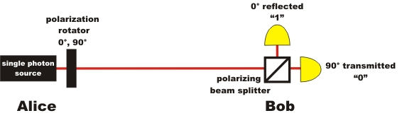

Quantum Cryptography Chapter 2:
Code distribution with single photons
In the last chapter on the One-Time-Pad it was shown that the system's security depends on the random
generation and secure distribution of a secret key code. The One-Time-Pad
offers absolute security if the code is completely at random, if it is
only known to two persons and if it is at least as long as the actual
message. The random generation and safe distribution of such a code can
be mastered by quantum physics.
Introduction on code distribution with single photons
For binary information
transmission, single photons can be used. The binary information "1" or
"0" is allocated to the polarization of the single photons. Binary "0"
correlates with the linear horizontally polarized photon. Binary "1"
correlates with the linear vertically polarized photon (pic. 1).
pic. 1: Linear polarization of the photon and binary allocation
vertical polarization: "1", horizontal polarization: "0",
Alice
and Bob are now far apart and wish to exchange information without
communicating directly. Alice has a sender unit and Bob has a receiver
unit for single photons. (pic. 2).
The sender unit on
Alice's side consists of a single photon source and a polarization rotator (λ/2-disc). Every photon from Alice's photon source is,
initially, polarized vertically. Alice can turn the polarization from
vertical to horizontal with the polarization rotator. If Alice wants to
send the binary "1", she does not change the vertical polarization of the
photon. If Alice wants to send the binary "0" to Bob, she turns the
polarization rotator by 90°. After adjusting the polarization rotator,
Alice starts the single photon source at the push of a button, which
results in exactly one single photon being sent to Bob.
The receiver unit on Bob's side consists of a polarizing beam
splitter and two detectors. At a polarizing beam splitter,
horizontally polarized light is transmitted while vertically polarized
light is reflected. Every single horizontally polarized photon is
therefore transmitted and registered as a binary 0 by the "horizontal
detector". In the same manner, every single vertically polarized photon
is reflected and registered as a binary 1 by the "vertical detector".

pic. 2: Basis of quantum cryptography
If the direction of polarization is
to be turned by e.g. 90° on Alice's side, the polarization rotator must
only be adjusted to half (45°) the polarization angle about to be
turned. This is an optical feature of the polarization rotators.
Polarization rotators have a symmetry axis (optical axis), which can be
seen as an axis of reflexion for the polarization. (pic. 3 left). On
the real polarization rotator (pic. 3 right), the symmetry axis is
marked by the white line.
pic. 3 left: polarization rotator principle: polarization of light is turned reflexion-symmetric to the symmetry axis.
pic. 3 right: polarization rotator in a support with only two possible settings (0° and 90°)
Code distribution in an experiment
In the following
interactive experiment, the basic principle of quantum cryptography can
be shown. In the experiment, Alice's sender unit is at approx. 2
metres distance from Bob's receiver unit. On the way from Alice to Bob,
only a few photons are absorbed or scattered as, with the wave length of
photons of 810nm, the transmission through air is very close to 100%.
In the interactive experiment there are three views: The overall view,
Alice's view and Bob's view. The choice of the direction of
polarization on Alice's side can, in the interactive experiment, be
made manually using the grey push-buttons beside the polarization rotator. Just like in the real experiment, the
polarization can also be rotated automatically (button
"Alice: automatic"). First, the polarization rotator must be adjusted,
then the single photon source is started. In the experiment, an
"announced photon source" is used, which is explained in Chapter 4.
The code generated must be unpredictably random. This is achieved by
activating the automatic polarization rotator with a quantum random
number. This random number has beforehand been recorded and saved in the quantum random experiment. For complete security, the quantum random number must be
generated directly parallel, and then transferred onto the automatic
polarization rotator without buffering. This is feasible with
inexpensive and commercially available quantum random generators.
[Idq08] (see quantum random).
Try out whether or not the code can be transmitted uniquely between
Alice and Bob in the interactive experiment. Would it be possible for a
spy to copy the secret code unnoticed?
Monitoring and explanation:
In
the experiment, information can be transmitted at the speed of light
with the aid of polarized single photons. Every time Alice sends the
binary 1, Bob receives the binary 1. Due to experimental inaccuracies
and measurement errors, it very rarely (1% of all cases) happens that
Alice sends e.g. a binary 1 and Bob receives a binary 0 (dark noise,
faulty components). These errors can later be filtered out using
special error algorithms.
With the quantum random generator at the polarization rotator, the
generated code is unpredictably random. It is also only known to Alice
and Bob. Is this statement correct? Could a third party have made a
copy of the code unnoticed?
Unfortunately the answer is
yes. The spy Eve (so called after eavesdropping) can creep unnoticed
into the optical path with the following unit (pic. 4). Eve's unit
includes the receiver unit like Bob's and the sender unit like Alice's.
Eve receives the photon, therefore knows the binary number and sends an
accordant photon with the identical polarization to Bob. So what use is
the transmission of the secret key code using single photons really,
regarding security? It does not mean absolute security so far anyway! Are there any alternatives [forward]?

pic. 4: Setup for Eve the spy
Unnoticed copying of the code
Original data from the experiment: Random data for polarization rotators , single events, continuous events
To Chapter 3: Code distribution with detection of a spy
Back to overview
Author: P. Bronner, August 2008
Translation: G. Murphy